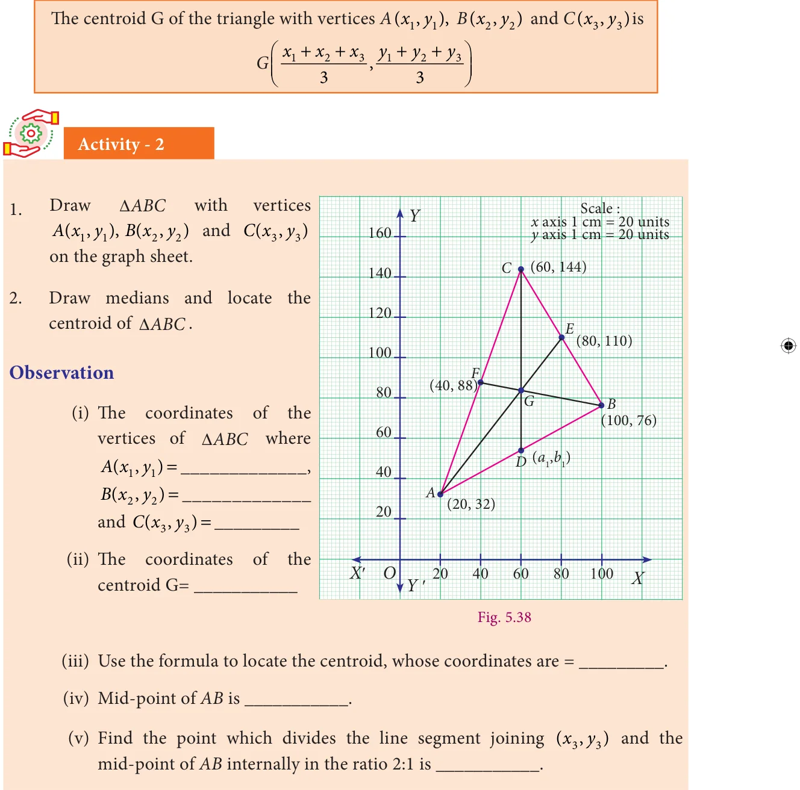
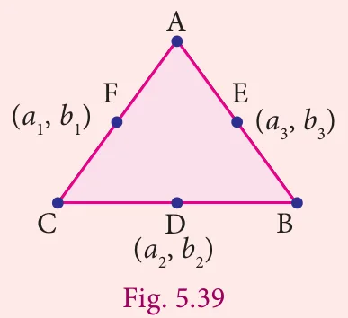
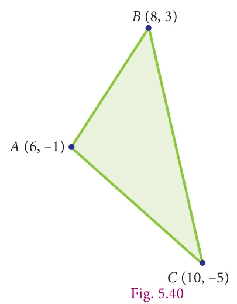
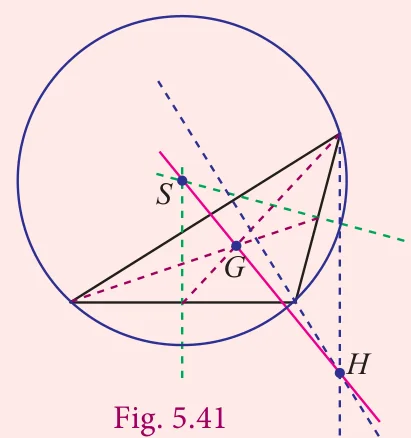
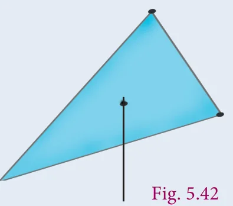

Consider a \(\triangle ABC\) whose vertices are \(A(x_1, y_1)\), \(B(x_2, y_2)\) and \(C(x_3, y_3)\).
Let \(AD\), \(BE\) and \(CF\) be the medians of the \(\triangle ABC\).
The mid-point of \(BC\) is \(D\left(\frac{x_2 + x_3}{2}, \frac{y_2 + y_3}{2}\right)\)
Fig. 5.37
The centroid \(G\) divides the median \(AD\) internally in the ratio 2:1 and therefore by section formula, the centroid
\(G(x,y)\) is \(\left(\dfrac{\frac{2(x_2 + x_3)}{2} + 1(x_1)}{2+1}, \dfrac{\frac{2(y_2 + y_3)}{2} + 1(y_1)}{2+1}\right) = \left(\frac{x_1 + x_2 + x_3}{3}, \frac{y_1 + y_2 + y_3}{3}\right)\)

Note

- The medians of a triangle are concurrent and the point of concurrence, the centroid \(G\), is one-third of the distance from the opposite side to the vertex along the median.
- The centroid of the triangle obtained by joining the mid-points of the sides of a triangle is the same as the centroid of the original triangle.
- If \((a_1, b_1)\), \((a_2, b_2)\) and \((a_3, b_3)\) are the mid-points of the sides of a triangle \(ABC\) then its centroid \(G\) is given by
\(G\left(\frac{a_1 + a_2 + a_3}{3}, \frac{b_1 + b_2 + b_3}{3}\right)\)
Example 5.20
Find the centroid of the triangle whose veritices are \(A(6, -1)\), \(B(8, 3)\) and \(C(10, -5)\).
Solution

The centroid \(G(x, y)\) of a triangle whose vertices are \((x_1, y_1)\), \((x_2, y_2)\) and \((x_3, y_3)\) is given by
\(G(x,y) = G\left(\frac{x_1 + x_2 + x_3}{3}, \frac{y_1 + y_2 + y_3}{3}\right)\)
We have \((x_1, y_1) = (6, -1)\); \((x_2, y_2) = (8, 3)\); \((x_3, y_3) = (10, -5)\)
The centroid of the triangle
\(G(x, y) = G\left(\frac{6 + 8 + 10}{3}, \frac{-1 + 3 - 5}{3}\right)\)
\(= G\left(\frac{24}{3}, \frac{-3}{3}\right) = G(8, -1)\)
Note

- The Euler line of a triangle is the line that passes through the orthocenter \((H)\), centroid \((G)\) and the circumcenter \((S)\). \(G\) divides the line segment \(\overline{HS}\) in the ratio 2:1 from the orthocenter. That is centroid divides orthocenter and circumcenter internally in the ratio 2:1 from the Orthocentre.
- In an equilateral triangle, orthocentre, incentre, centroid and circumcentre are all the same.
Example 5.21
If the centroid of a triangle is at \((-2, 1)\) and two of its vertices are \((1, -6)\) and \((-5, 2)\), then find the third vertex of the triangle.
Solution
Let the vertices of a triangle be \(A(1, -6)\), \(B(-5, 2)\) and \(C(x_3, y_3)\)
Given the centroid of a triangle as \((-2, 1)\) we get,

Therefore, third vertex is \((-2, 7)\).
Thinking Corner

- Master gave a triangular plate with vertices \(A(5, 8)\), \(B(2, 4)\), \(C(8, 3)\) and a stick to a student. He wants to balance the plate on the stick. Can you help the boy to locate that point which can balance the plate.
- Which is the centre of gravity for this triangle? why?